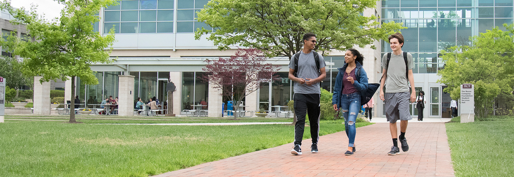
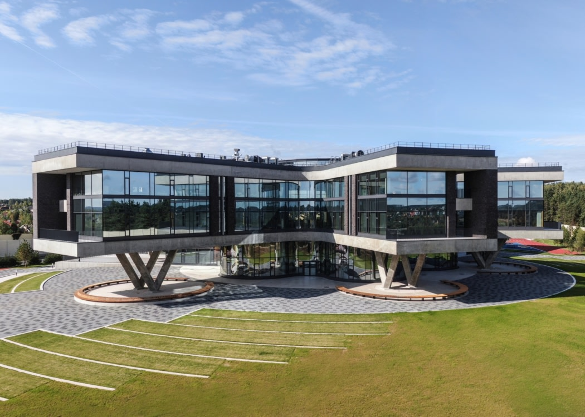
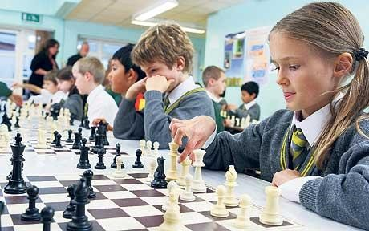

|

Our Community Learning Center
We welcome you to our school with the most technologically advanced and marvellous community center in the whole of Hogsmeade. This is the opportune place where you can study calmly in the study section, or discuss with your classmates or friends in the social section, or even have fun with others in events in the events section.
It is a wonder to have such a community learning center for our school, and it helps propel us to one of the very best schools in the whole of England. You will learn a lot of things here, and participate in many wonderful games and events organized by the school and students alike. Perhaps you will even organize an event of your own? Hopefully. 
Studying in the Community Learning Center
The community learning center is a wonderful place for your kids to learn the work taught at school, it is where when students have free time they are encouraged to work in the learning center so they can become more academically capable. You will have first class access to good seating, tables, writing equipment such as pencils, erasers and a whole lot of tools that you can draw with. You can even use interactive ipads with drawing and other learning features on them to learn in a more effective way in your free time.
Socializing and Events in the Community Learning Center
You will also be able to socialize with your classmates and friends, and possibly make new friends that way! It is a place designed with a sense of community and belonging in mind, and it will definitely make you feel right at home. There are many spots where you can chat, discuss and plan with your friends on events, your own things or even school work, and the whole place has a family atmosphere which will make you very relaxed when you come over here. This is the best place to ask for help if you need it for a better school experience, and we recommend going here to just have a blast. There are also computers you can use and daily TV broadcasts from where you and your buddies along with hundreds of other students can watch the most exciting things happening around the world. 
Finally, there will be regular events organized by students and the school alike such as a chess tournament, a math puzzle contest, a monopoly free-for-all, creative writing contest and more. I am sure you will find something that suits you in these broad ranges of events, and you will definitely have a lot of fun engaging in them.
All in all, the Community Learning Center is the best spot you should go to if you want to engage in more studies or social events, I won't say more here and see you in the Community Learning Center!
Marcus Greeb, Community Learning Center Counsellor
|